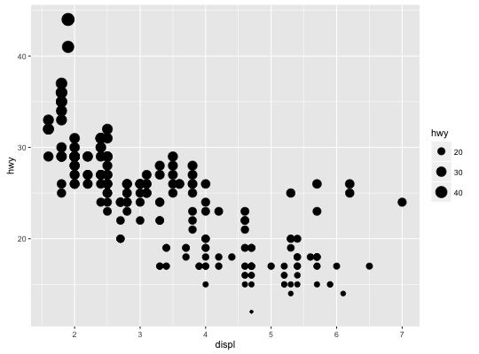
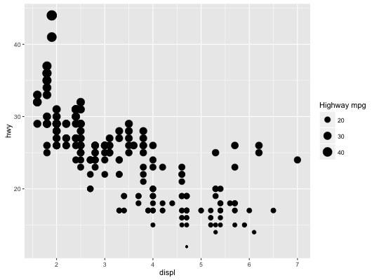
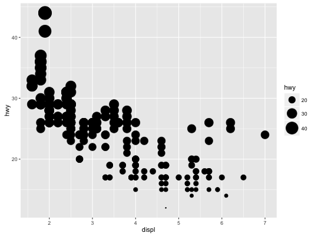
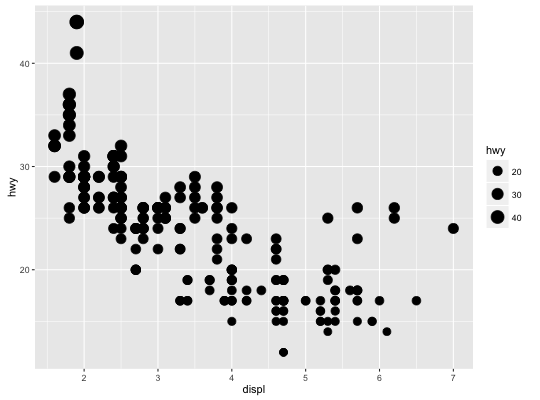
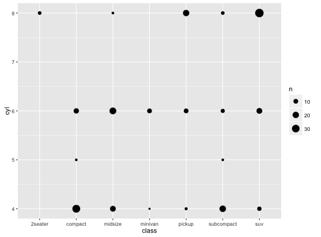
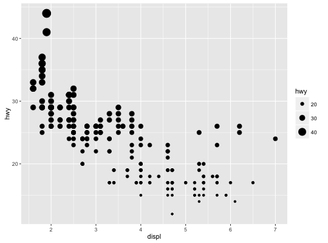

scale_radius(name = waiver(), breaks = waiver(), labels = waiver(), limits = NULL, range = c(1, 6), trans = "identity", guide = "legend")scale_size(name = waiver(), breaks = waiver(), labels = waiver(), limits = NULL, range = c(1, 6), trans = "identity", guide = "legend")scale_size_area(..., max_size = 6)
NULL, the default, the name of the scale is taken from the first
mapping used for that aesthetic.NULL for no breaks
waiver() for the default breaks computed by the
transformation object
NULL for no labels
waiver() for the default labels computed by the
transformation object
breaks)
NA to refer to the existing minimum or maximum.name_trans, e.g.
boxcox_trans. You can create your own
transformation with trans_new.continuous_scale
to control name, limits, breaks, labels and so forth.scale_size scales area, scale_radius scales radius. The size
aesthetic is most commonly used for points and text, and humans perceive
the area of points (not their radius), so this provides for optimal
perception. scale_size_area ensures that a value of 0 is mapped
to a size of 0.
p <- ggplot(mpg, aes(displ, hwy, size = hwy)) + geom_point() p
p + scale_size("Highway mpg")
p + scale_size(range = c(0, 10))
# If you want zero value to have zero size, use scale_size_area: p + scale_size_area()
# This is most useful when size is a count ggplot(mpg, aes(class, cyl)) + geom_count() + scale_size_area()
# If you want to map size to radius (usually bad idea), use scale_radius p + scale_radius()
scale_size_area if you want 0 values to be mapped
to points with size 0.